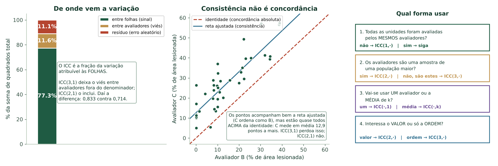
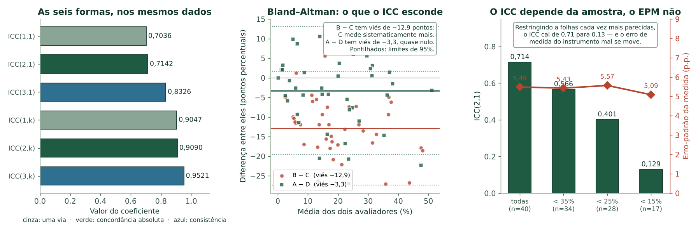

Coeficiente de correlação intraclasse (ICC)
Mede a fração da variação observada atribuível às unidades, e não ao erro de medida, em seis formas que respondem a perguntas distintas.
Comece por aqui
Quando a resposta é contínua, a pergunta sobre concordância muda de forma: não se trata mais de contar coincidências, mas de saber que fração da variação observada vem das unidades e que fração vem do erro de medida. O coeficiente de correlação intraclasse responde exatamente a isso — e vem em seis formas, porque a pergunta tem seis variantes.
Três decisões independentes geram as seis: os avaliadores são os mesmos em todas as unidades? São uma amostra de uma população maior? A medida que se vai usar na prática é de um avaliador ou a média de vários? Reportar "ICC = 0,83" sem dizer qual forma é como reportar "a média é 17" sem dizer de quê. Nos dados desta ficha, as seis formas vão de 0,704 a 0,952.
O que é o ICC
Todas as formas partem da mesma decomposição da variação, feita por uma ANOVA de duas vias sem repetição: a variação total se reparte entre unidades, entre avaliadores e resíduo. O que muda de uma forma para outra é o que vai ao denominador.

É a distinção mais importante, e a mais esquecida. Consistência pergunta se os avaliadores ordenam as unidades do mesmo jeito; ela perdoa um avaliador que soma dez pontos a tudo. Concordância absoluta pergunta se eles dão o mesmo número; ela não perdoa. Nos dados desta ficha, ICC(3,1) = 0,833 e ICC(2,1) = 0,714, e a diferença de 0,119 é exatamente o preço do viés do avaliador C. Somar 10 a todas as medidas dele não altera o ICC(3,1) e derruba o ICC(2,1) em 0,185.
Pressupostos e como verificá-los
| Pressuposto | Por que importa | Como verificar |
|---|---|---|
| Resposta contínua, ou ordinal tratável como intervalar | O ICC usa variâncias. | Natureza da variável; com escala nominal, use o kappa de Fleiss. |
| Efeitos aditivos (sem interação unidade × avaliador) | O modelo de duas vias sem repetição supõe aditividade. | Gráfico de perfis; teste de não aditividade de Tukey. |
| Resíduos aproximadamente normais e homocedásticos | Os intervalos de confiança dependem disso. | Gráficos de resíduos; teste de Levene por avaliador. |
| Unidades independentes | A ANOVA pressupõe isso. | Delineamento. |
| Amostra representativa da população-alvo | O ICC depende da heterogeneidade das unidades. | Compare a dispersão da amostra com a da população pretendida. |
| Forma declarada antes | As seis formas dão respostas diferentes. | Protocolo. |
| Mesmos avaliadores em todas as unidades, para as formas (2) e (3) | É o que define o modelo de duas vias. | Estrutura dos dados. |
Ele depende também de quão diferentes são as unidades medidas. Restringindo os dados desta ficha a folhas cada vez mais parecidas entre si, o ICC(2,1) cai de 0,714 para 0,129 — enquanto o erro-padrão da medida fica praticamente constante, entre 5,09 e 5,57 pontos percentuais. O instrumento é o mesmo; o que mudou foi o denominador. É o mesmo fenômeno da correlação restrita a uma faixa estreita, e é por isso que um ICC obtido em uma população heterogênea não se transfere para uma homogênea.
Formulação e cálculo
A decomposição
As seis formas
Em que:
- \(n,\ k\)
- número de unidades e de avaliadores
- \(\text{MS}_R\)
- quadrado médio entre unidades
- \(\text{MS}_C\)
- quadrado médio entre avaliadores
- \(\text{MS}_E\)
- quadrado médio do resíduo
- \(\text{MS}_W\)
- quadrado médio dentro das unidades, que junta \(\text{MS}_C\) e \(\text{MS}_E\)
Na linguagem do modelo misto
A formulação moderna escreve \(y_{ij}=\mu+a_i+b_j+\varepsilon_{ij}\), com \(a_i\sim N(0,\sigma_a^2)\) para as unidades, \(b_j\sim N(0,\sigma_b^2)\) para os avaliadores e \(\varepsilon_{ij}\sim N(0,\sigma^2)\). Então
A diferença fica evidente: a concordância absoluta inclui a variância entre avaliadores no denominador; a consistência, não.
Exemplo numérico, passo a passo
| Fonte | gl | Soma de quadrados | Quadrado médio | % do total |
|---|---|---|---|---|
| Entre folhas | 39 | 24 522,81 | 628,7900 | 77,3% |
| Entre avaliadores | 3 | 3 668,23 | 1 222,7421 | 11,6% |
| Resíduo | 117 | 3 520,77 | 30,0921 | 11,1% |
| Total | 159 | 31 711,81 | — | 100% |
O efeito de avaliador é inequívoco: \(F=\text{MS}_C/\text{MS}_E=1\,222{,}74/30{,}09=40{,}63\) com 3 e 117 graus de liberdade, \(p=4{,}6\times10^{-18}\). As médias dos quatro avaliadores são 17,13%, 13,91%, 26,85% e 20,46% — o C quase dobra o B.
O intervalo de confiança exato de ICC(3,1), baseado na razão \(F=\text{MS}_R/\text{MS}_E\), é [0,7480; 0,8982].
Duas quantidades na unidade original
O erro-padrão da medida e a diferença mínima detectável dizem, na escala do problema, o que o ICC só diz em termos relativos. Duas leituras da mesma folha por avaliadores diferentes podem diferir em até 15 pontos percentuais apenas por erro de medida.
Propriedades
- \(\text{ICC}(3,1)\geq\text{ICC}(2,1)\) sempre, com igualdade apenas quando não há efeito de avaliador.
- Um deslocamento constante aplicado a um avaliador não altera o ICC(3,·) e reduz o ICC(2,·).
- A relação entre as formas \((\cdot,1)\) e \((\cdot,k)\) é a fórmula de Spearman–Brown: \(\text{ICC}(\cdot,k)=\dfrac{k\,\text{ICC}(\cdot,1)}{1+(k-1)\text{ICC}(\cdot,1)}\).
- É numericamente equivalente ao kappa com pesos quadráticos aplicado aos códigos de uma escala ordinal (Fleiss e Cohen, 1973).
- Com \(k=2\), o ICC(3,1) aproxima-se da correlação de Pearson entre os dois avaliadores, mas não coincide.
- Cresce com a heterogeneidade das unidades, mesmo com o erro de medida constante.
- Pode ser negativo quando o erro de medida supera a variação entre unidades.
Como interpretar os resultados
| Elemento | O que informa | Cuidado |
|---|---|---|
| A forma usada | Qual pergunta está sendo respondida. | Declare sempre: modelo, tipo e unidade. |
| Valor do ICC | Fração da variação atribuível às unidades. | Depende da heterogeneidade da amostra. |
| IC 95% | A precisão. | Com n pequeno é muito largo. |
| MS_C e o teste F | Se há viés sistemático entre avaliadores. | É o que separa ICC(2) de ICC(3). |
| EPM | Erro de medida na unidade original. | Não depende da heterogeneidade. |
| DMD | Diferença mínima que o método detecta. | Compare com a diferença de interesse prático. |
| Bland–Altman | Viés e limites de concordância por par. | Mostra o que o ICC esconde. |
As faixas de Koo e Li, com a mesma ressalva de sempre
| ICC | Rótulo |
|---|---|
| < 0,50 | pobre |
| 0,50 a 0,75 | moderada |
| 0,75 a 0,90 | boa |
| > 0,90 | excelente |
Nos dados desta ficha, o ICC(2,k) é 0,909 — "excelente" pela convenção. E, no entanto, a diferença mínima detectável é de 15,2 pontos percentuais de área lesionada. Um ensaio que precise distinguir tratamentos separados por 10 pontos percentuais não pode usar esse método de avaliação, por mais alto que seja o ICC. O coeficiente é adimensional e mede uma razão; a decisão prática depende da escala do problema, e é o EPM que a informa.
Como executar no R e em Python
Onde executar o código em Python
Não é preciso instalar nada: o Google Colab é um computador na nuvem, gratuito, que executa Python pelo navegador e já traz as bibliotecas usadas aqui (numpy, scipy e matplotlib).
Duas funções cobrem tudo. psych::ICC() devolve as seis formas de uma vez, com intervalos e teste F — é a mais prática. irr::icc() exige declarar model ("oneway" ou "twoway"), type ("consistency" ou "agreement") e unit ("single" ou "average"), o que tem a vantagem pedagógica de obrigar a escolha explícita. A formulação por modelo misto, com lme4::lmer(y ~ (1|unidade) + (1|avaliador)), generaliza para delineamentos desbalanceados e com covariáveis.
library(psych)
ICC(area) # as seis formas, com IC
library(irr)
icc(area, model = "twoway", type = "agreement", unit = "single") # ICC(2,1)
icc(area, model = "twoway", type = "consistency", unit = "single") # ICC(3,1)
Exemplo de aplicação
Contexto dos dados
Os dados são fictícios e foram criados pelo autor: as mesmas 40 folhas de cafeeiro das demais fichas de concordância, agora com a severidade medida em escala contínua — porcentagem de área foliar lesionada — por quatro avaliadores. Como nas outras fichas, um dos avaliadores foi construído com viés sistemático: o C superestima em cerca de 10 pontos percentuais.
Código em R
# Coeficiente de correlação intraclasse: exemplo completo ----
# Pacotes: irr (icc), psych (ICC), lme4 (via modelo misto), blandr
# install.packages(c("irr", "psych", "lme4"))
# Dados fictícios: as mesmas 40 folhas das demais fichas de concordância,
# agora com a severidade medida em ESCALA CONTÍNUA (% de área lesionada),
# estimada por quatro avaliadores.
area <- matrix(c(
1.8, 8.3,26.3,11.1, 32.4,20.9,32.8,26.8, 37.8,34.4,39.3,36.4,
34.1,34.5,40.7,38.5, 31.6,32.0,41.3,31.0, 2.2, 0.1,11.7, 0.2,
20.8,10.2,32.3,28.5, 0.3, 8.2,23.8, 6.2, 13.1, 8.0,28.8,33.8,
24.0,22.3,29.6,17.4, 49.6,38.6,56.5,52.8, 20.3,20.0,27.4,25.8,
3.3, 0.1, 5.0, 0.1, 20.3,15.7,28.8,19.8, 10.0, 9.1,13.5, 0.1,
33.0,25.5,39.9,29.9, 27.9,22.2,49.3,42.6, 28.1,21.6,35.1,22.1,
13.3, 7.8,19.7,15.9, 31.9,10.0,37.0,29.6, 6.2,11.0,22.9,10.6,
3.6, 0.1,26.4,24.1, 22.3, 9.8,26.1,18.6, 4.7, 4.3,22.0, 7.3,
0.1, 0.1,17.1, 4.7, 2.5, 8.5,14.5, 0.5, 9.2,18.4,12.8,23.6,
12.6, 1.5,13.4,16.8, 37.4,30.3,57.1,38.9, 3.5, 0.1,10.0, 4.2,
21.5,23.1,39.7,32.5, 10.8,10.1,19.4, 2.1, 9.5, 0.1,10.4, 8.2,
0.1, 6.7, 5.5, 0.1, 14.7,11.3,28.4,18.9, 19.2,10.2,25.1, 8.6,
19.7,10.0,15.5,27.9, 1.3, 0.1,11.3,12.7, 36.4,38.8,57.4,58.7,
13.9,12.6,20.1,30.7),
ncol = 4, byrow = TRUE, dimnames = list(NULL, c("A","B","C","D")))
colMeans(area); apply(area, 2, sd)
# A ANOVA de duas vias que está por trás
longo <- data.frame(y = as.vector(area),
folha = factor(rep(1:40, times = 4)),
aval = factor(rep(colnames(area), each = 40)))
anova(aov(y ~ folha + aval, data = longo))
# MSR = QM de folha, MSC = QM de avaliador, MSE = QM do resíduo
# As seis formas de Shrout e Fleiss
library(psych)
ICC(area) # devolve as seis de uma vez, com IC e teste F
library(irr)
icc(area, model = "oneway", type = "consistency", unit = "single")
icc(area, model = "twoway", type = "agreement", unit = "single") # ICC(2,1)
icc(area, model = "twoway", type = "consistency", unit = "single") # ICC(3,1)
icc(area, model = "twoway", type = "agreement", unit = "average") # ICC(2,k)
# A conta à mão
n <- nrow(area); k <- ncol(area); gm <- mean(area)
MSR <- k*sum((rowMeans(area) - gm)^2)/(n - 1)
MSC <- n*sum((colMeans(area) - gm)^2)/(k - 1)
MSE <- sum((area - rowMeans(area) - rep(colMeans(area), each = n) + gm)^2)/((n-1)*(k-1))
MSW <- sum((area - rowMeans(area))^2)/(n*(k-1))
c(ICC11 = (MSR - MSW)/(MSR + (k-1)*MSW),
ICC21 = (MSR - MSE)/(MSR + (k-1)*MSE + k*(MSC - MSE)/n),
ICC31 = (MSR - MSE)/(MSR + (k-1)*MSE))
# Pelo modelo misto, que é a formulação moderna
library(lme4)
m <- lmer(y ~ (1 | folha) + (1 | aval), data = longo)
vc <- as.data.frame(VarCorr(m)); vc
s2f <- vc$vcov[vc$grp == "folha"]; s2a <- vc$vcov[vc$grp == "aval"]
s2e <- vc$vcov[vc$grp == "Residual"]
s2f/(s2f + s2a + s2e) # ICC(2,1): concordância absoluta
s2f/(s2f + s2e) # ICC(3,1): consistência
# Erro-padrão da medida e diferença mínima detectável
EPM <- sqrt(MSE); EPM
1.96*sqrt(2)*EPM
# Bland-Altman para cada par
pares <- combn(colnames(area), 2)
t(apply(pares, 2, function(p) {
d <- area[, p[1]] - area[, p[2]]
c(vies = mean(d), dp = sd(d),
inf = mean(d) - 1.96*sd(d), sup = mean(d) + 1.96*sd(d))
}))
# install.packages("blandr"); blandr::blandr.draw(area[,"B"], area[,"C"])
# Spearman-Brown: quanto se ganha com mais avaliadores
r1 <- icc(area, model = "twoway", type = "agreement", unit = "single")$value
sapply(1:10, function(kk) kk*r1/(1 + (kk-1)*r1))
# O ICC depende da heterogeneidade da amostra
sub <- area[rowMeans(area) < 25, ]
icc(sub, model = "twoway", type = "agreement", unit = "single")$value
sqrt(sum((sub - rowMeans(sub) - rep(colMeans(sub), each = nrow(sub))
+ mean(sub))^2)/((nrow(sub)-1)*(k-1))) # o EPM mal muda
A mesma análise em Python, com os resultados
Cole o código em um notebook do Google Colab ↗ e execute com Shift+Enter. Os valores abaixo são a saída desse código.
# Bibliotecas: numpy e scipy (ambas já instaladas no Google Colab)
import numpy as np
from scipy import stats
# ===================================================================
# Dados fictícios, criados pelo autor. As mesmas 40 folhas de cafeeiro
# das demais fichas de concordância, agora com a severidade medida em
# ESCALA CONTÍNUA: porcentagem de área foliar lesionada, estimada por
# quatro avaliadores.
# ===================================================================
AREA = np.array([
[ 1.8, 8.3,26.3,11.1],[32.4,20.9,32.8,26.8],[37.8,34.4,39.3,36.4],
[34.1,34.5,40.7,38.5],[31.6,32.0,41.3,31.0],[ 2.2, 0.1,11.7, 0.2],
[20.8,10.2,32.3,28.5],[ 0.3, 8.2,23.8, 6.2],[13.1, 8.0,28.8,33.8],
[24.0,22.3,29.6,17.4],[49.6,38.6,56.5,52.8],[20.3,20.0,27.4,25.8],
[ 3.3, 0.1, 5.0, 0.1],[20.3,15.7,28.8,19.8],[10.0, 9.1,13.5, 0.1],
[33.0,25.5,39.9,29.9],[27.9,22.2,49.3,42.6],[28.1,21.6,35.1,22.1],
[13.3, 7.8,19.7,15.9],[31.9,10.0,37.0,29.6],[ 6.2,11.0,22.9,10.6],
[ 3.6, 0.1,26.4,24.1],[22.3, 9.8,26.1,18.6],[ 4.7, 4.3,22.0, 7.3],
[ 0.1, 0.1,17.1, 4.7],[ 2.5, 8.5,14.5, 0.5],[ 9.2,18.4,12.8,23.6],
[12.6, 1.5,13.4,16.8],[37.4,30.3,57.1,38.9],[ 3.5, 0.1,10.0, 4.2],
[21.5,23.1,39.7,32.5],[10.8,10.1,19.4, 2.1],[ 9.5, 0.1,10.4, 8.2],
[ 0.1, 6.7, 5.5, 0.1],[14.7,11.3,28.4,18.9],[19.2,10.2,25.1, 8.6],
[19.7,10.0,15.5,27.9],[ 1.3, 0.1,11.3,12.7],[36.4,38.8,57.4,58.7],
[13.9,12.6,20.1,30.7]])
AV = ["A", "B", "C", "D"]
def quadrados_medios(Y):
"""Decomposição da ANOVA de duas vias sem repetição."""
Y = np.asarray(Y, float); n, k = Y.shape; gm = Y.mean()
MSR = k*((Y.mean(1)-gm)**2).sum()/(n-1) # entre unidades
MSC = n*((Y.mean(0)-gm)**2).sum()/(k-1) # entre avaliadores
MSE = ((Y - Y.mean(1)[:,None] - Y.mean(0)[None,:] + gm)**2).sum()/((n-1)*(k-1))
MSW = ((Y - Y.mean(1)[:,None])**2).sum()/(n*(k-1)) # dentro (uma via)
return n, k, MSR, MSC, MSE, MSW
def todos_icc(Y):
n, k, MSR, MSC, MSE, MSW = quadrados_medios(Y)
return {
"ICC(1,1)": (MSR-MSW)/(MSR+(k-1)*MSW),
"ICC(2,1)": (MSR-MSE)/(MSR+(k-1)*MSE+k*(MSC-MSE)/n),
"ICC(3,1)": (MSR-MSE)/(MSR+(k-1)*MSE),
"ICC(1,k)": (MSR-MSW)/MSR,
"ICC(2,k)": (MSR-MSE)/(MSR+(MSC-MSE)/n),
"ICC(3,k)": (MSR-MSE)/MSR}
def ic_icc31(Y, alfa=0.05):
"""IC exato de ICC(3,1), baseado na razão F = MSR/MSE."""
n, k, MSR, MSC, MSE, MSW = quadrados_medios(Y)
F = MSR/MSE
fl = F/stats.f.ppf(1-alfa/2, n-1, (n-1)*(k-1))
fu = F*stats.f.ppf(1-alfa/2, (n-1)*(k-1), n-1)
return (fl-1)/(fl+k-1), (fu-1)/(fu+k-1)
n, k, MSR, MSC, MSE, MSW = quadrados_medios(AREA)
print(f"{n} folhas, {k} avaliadores, resposta contínua (% de área lesionada)")
print(f"\nMédia por avaliador: " + ", ".join(
f"{AV[j]} {AREA[:,j].mean():.2f}%" for j in range(k)))
print(f"Desvio-padrão: " + ", ".join(
f"{AV[j]} {AREA[:,j].std(ddof=1):.2f}" for j in range(k)))
print(f"Média geral = {AREA.mean():.3f}%")
print("O avaliador C superestima sistematicamente: a média dele é quase o")
print("dobro da do B. Essa diferença é exatamente o que separa as formas de")
print("ICC umas das outras.")
# ===================================================================
# PARTE 1 - a tabela de ANOVA que está por trás
# ===================================================================
print("\n" + "=" * 70)
print("ANOVA de duas vias sem repetição: folhas (linhas) x avaliadores (colunas)")
SQR = MSR*(n-1); SQC = MSC*(k-1); SQE = MSE*(n-1)*(k-1)
print(f"\n{'fonte':<22}{'gl':>6}{'soma de quadrados':>20}{'quadrado médio':>18}")
print(f"{'entre folhas':<22}{n-1:>6}{SQR:>20.2f}{MSR:>18.4f}")
print(f"{'entre avaliadores':<22}{k-1:>6}{SQC:>20.2f}{MSC:>18.4f}")
print(f"{'resíduo':<22}{(n-1)*(k-1):>6}{SQE:>20.2f}{MSE:>18.4f}")
print(f"{'total':<22}{n*k-1:>6}{SQR+SQC+SQE:>20.2f}")
print(f"\nDentro das folhas, sem separar avaliadores: MSW = {MSW:.4f}")
print(f" (MSW junta o efeito de avaliador e o resíduo: "
f"{(SQC+SQE)/(n*(k-1)):.4f})")
F = MSC/MSE
print(f"\nTeste do efeito de avaliador: F = MSC/MSE = {MSC:.2f}/{MSE:.2f} = "
f"{F:.3f}")
print(f" gl = {k-1} e {(n-1)*(k-1)} | p = {stats.f.sf(F, k-1, (n-1)*(k-1)):.3e}")
print(" Há diferença sistemática entre avaliadores, e é isso que faz")
print(" ICC(2,1) e ICC(3,1) divergirem.")
# ===================================================================
# PARTE 2 - as seis formas
# ===================================================================
print("\n" + "=" * 70)
print("As seis formas de ICC de Shrout e Fleiss (1979)")
icc = todos_icc(AREA)
print(f"\n{'forma':<11}{'modelo':<24}{'o que mede':<36}{'valor':>8}")
desc = [("ICC(1,1)","uma via, aleatório","avaliadores diferentes por unidade"),
("ICC(2,1)","duas vias, aleatório","concordância ABSOLUTA, 1 avaliador"),
("ICC(3,1)","duas vias, misto","CONSISTÊNCIA, 1 avaliador"),
("ICC(1,k)","uma via, aleatório","média de k avaliadores diferentes"),
("ICC(2,k)","duas vias, aleatório","concordância absoluta, média de k"),
("ICC(3,k)","duas vias, misto","consistência, média de k")]
for nome, mod, oq in desc:
print(f"{nome:<11}{mod:<24}{oq:<36}{icc[nome]:>8.4f}")
lo, hi = ic_icc31(AREA)
print(f"\nIC 95% exato de ICC(3,1): [{lo:.4f}; {hi:.4f}]")
print(f"\nDiferença entre ICC(3,1) e ICC(2,1) = "
f"{icc['ICC(3,1)']-icc['ICC(2,1)']:.4f}")
print("Essa diferença é o preço do viés dos avaliadores. ICC(3,1) pergunta se")
print("eles ORDENAM as folhas do mesmo jeito; ICC(2,1) pergunta se dão o MESMO")
print("NÚMERO. Como o avaliador C soma cerca de 10 pontos percentuais a tudo,")
print("ele ordena bem mas não acerta o valor, e só o ICC(2,1) o penaliza.")
print("\nDemonstração: somando 10 a TODAS as medidas do avaliador C")
Y2 = AREA.copy(); Y2[:,2] = AREA[:,2] + 10
i2 = todos_icc(Y2)
print(f"{'forma':<12}{'original':>12}{'com +10 em C':>16}{'variação':>12}")
for nome in ["ICC(1,1)","ICC(2,1)","ICC(3,1)"]:
print(f"{nome:<12}{icc[nome]:>12.4f}{i2[nome]:>16.4f}{i2[nome]-icc[nome]:>+12.4f}")
print("ICC(3,1) não se move uma casa decimal: um deslocamento constante não")
print("altera a ordenação. ICC(2,1) e ICC(1,1) caem, e devem cair mesmo.")
# ===================================================================
# PARTE 3 - a escolha da forma, em três perguntas
# ===================================================================
print("\n" + "=" * 70)
print("A escolha da forma responde a três perguntas, nesta ordem:")
print("\n 1. Todas as unidades foram avaliadas pelos MESMOS avaliadores?")
print(" Não -> modelo de uma via, ICC(1,*).")
print(" Sim -> pergunta 2.")
print(" 2. Os avaliadores são uma amostra de uma população maior, à qual")
print(" se quer generalizar?")
print(" Sim -> modelo de duas vias ALEATÓRIO, ICC(2,*).")
print(" Não, são estes e só estes -> modelo MISTO, ICC(3,*).")
print(" 3. A medida que se vai usar na prática é de UM avaliador ou a MÉDIA")
print(" de k avaliadores?")
print(" Um -> ICC(*,1). Média de k -> ICC(*,k).")
print("\nE uma quarta, transversal: interessa a concordância ABSOLUTA ou")
print("apenas a CONSISTÊNCIA? Absoluta -> ICC(2,*). Consistência -> ICC(3,*).")
print("\nPor que a média de k avaliadores é sempre mais confiável:")
print(f"{'k':>4}{'ICC(2,k) previsto por Spearman-Brown':>42}")
r1 = icc["ICC(2,1)"]
for kk in [1, 2, 3, 4, 6, 10]:
print(f"{kk:>4}{kk*r1/(1+(kk-1)*r1):>42.4f}")
print(f"O valor observado com k = 4 é {icc['ICC(2,k)']:.4f} e a previsão da fórmula")
print(f"de Spearman-Brown é {4*r1/(1+3*r1):.4f}: são a mesma conta, escrita de dois modos.")
print("Médias de avaliadores são mais confiáveis que avaliadores isolados, e a")
print("fórmula diz exatamente quanto se ganha com cada avaliador a mais.")
# ===================================================================
# PARTE 4 - erro-padrão da medida e diferença mínima detectável
# ===================================================================
print("\n" + "=" * 70)
print("O ICC é adimensional, e por isso não basta. Duas quantidades na")
print("unidade original completam o quadro.")
EPM = np.sqrt(MSE)
DMD = 1.96*np.sqrt(2)*EPM
print(f"\n Erro-padrão da medida: EPM = raiz(MSE) = {EPM:.3f} pontos percentuais")
print(f" Diferença mínima detectável: DMD = 1,96 x raiz(2) x EPM = "
f"{DMD:.3f} p.p.")
print(f" Amplitude observada das médias por folha: "
f"{AREA.mean(1).min():.1f}% a {AREA.mean(1).max():.1f}%")
print("Duas leituras da mesma folha por avaliadores diferentes podem diferir")
print(f"em até {DMD:.1f} pontos percentuais só por erro de medida. Em um ensaio que")
print("compare tratamentos separados por menos que isso, o método de avaliação")
print("não serve - por mais alto que seja o ICC.")
print("\nLimites de concordância de Bland-Altman, para os pares de avaliadores")
print(f"{'par':>6}{'viés médio':>13}{'DP das diferenças':>20}{'limites de 95%':>26}")
for i in range(k):
for j in range(i+1, k):
d = AREA[:,i] - AREA[:,j]
print(f"{AV[i]+'-'+AV[j]:>6}{d.mean():>13.3f}{d.std(ddof=1):>20.3f}"
f" [{d.mean()-1.96*d.std(ddof=1):7.3f}; "
f"{d.mean()+1.96*d.std(ddof=1):7.3f}]")
print("O par B-C tem viés de −12,9 pontos: o C mede sistematicamente mais.")
print("O ICC sozinho esconde isso; o gráfico de Bland-Altman o expõe.")
# ===================================================================
# PARTE 5 - o ICC depende da HETEROGENEIDADE das unidades
# ===================================================================
print("\n" + "=" * 70)
print("O ICC não é uma propriedade só do instrumento: depende também de quão")
print("diferentes são as unidades medidas. Restringindo a amostra a folhas")
print("cada vez mais parecidas entre si, com o MESMO erro de medida:")
med = AREA.mean(1)
print(f"\n{'subconjunto':<34}{'n':>4}{'DP das médias':>16}{'ICC(2,1)':>11}{'EPM':>9}")
for rot, mask in [("todas as 40 folhas", np.ones(n, bool)),
("severidade média abaixo de 35%", med < 35),
("severidade média abaixo de 25%", med < 25),
("severidade média abaixo de 15%", med < 15),
("severidade média entre 5% e 20%", (med >= 5) & (med < 20))]:
Ys = AREA[mask]
if len(Ys) < 8: continue
r = todos_icc(Ys); _, _, _, _, mse_, _ = quadrados_medios(Ys)
print(f"{rot:<34}{len(Ys):>4}{Ys.mean(1).std(ddof=1):>16.3f}"
f"{r['ICC(2,1)']:>11.4f}{np.sqrt(mse_):>9.3f}")
print("\nO erro-padrão da medida mal se move - o instrumento é o mesmo - mas o")
print("ICC despenca de 0,71 para 0,13. É o mesmo fenômeno da")
print("correlação restrita a uma faixa estreita: o numerador encolhe e o")
print("denominador não. Por isso um ICC obtido em uma população heterogênea")
print("não se transfere para uma população homogênea, e por isso o EPM, que")
print("não depende da heterogeneidade, deve ser reportado junto.")
Resultados da execução
40 folhas, 4 avaliadores, resposta contínua (% de área lesionada)
Média por avaliador: A 17.12%, B 13.91%, C 26.85%, D 20.46%
Desvio-padrão: A 13.14, B 11.46, C 13.84, D 14.94
Média geral = 19.586%
O avaliador C superestima sistematicamente: a média dele é quase o
dobro da do B. Essa diferença é exatamente o que separa as formas de
ICC umas das outras.
======================================================================
ANOVA de duas vias sem repetição: folhas (linhas) x avaliadores (colunas)
fonte gl soma de quadrados quadrado médio
entre folhas 39 24522.81 628.7900
entre avaliadores 3 3668.23 1222.7421
resíduo 117 3520.77 30.0921
total 159 31711.81
Dentro das folhas, sem separar avaliadores: MSW = 59.9083
(MSW junta o efeito de avaliador e o resíduo: 59.9083)
Teste do efeito de avaliador: F = MSC/MSE = 1222.74/30.09 = 40.633
gl = 3 e 117 | p = 4.564e-18
Há diferença sistemática entre avaliadores, e é isso que faz
ICC(2,1) e ICC(3,1) divergirem.
======================================================================
As seis formas de ICC de Shrout e Fleiss (1979)
forma modelo o que mede valor
ICC(1,1) uma via, aleatório avaliadores diferentes por unidade 0.7036
ICC(2,1) duas vias, aleatório concordância ABSOLUTA, 1 avaliador 0.7142
ICC(3,1) duas vias, misto CONSISTÊNCIA, 1 avaliador 0.8326
ICC(1,k) uma via, aleatório média de k avaliadores diferentes 0.9047
ICC(2,k) duas vias, aleatório concordância absoluta, média de k 0.9090
ICC(3,k) duas vias, misto consistência, média de k 0.9521
IC 95% exato de ICC(3,1): [0.7480; 0.8982]
Diferença entre ICC(3,1) e ICC(2,1) = 0.1185
Essa diferença é o preço do viés dos avaliadores. ICC(3,1) pergunta se
eles ORDENAM as folhas do mesmo jeito; ICC(2,1) pergunta se dão o MESMO
NÚMERO. Como o avaliador C soma cerca de 10 pontos percentuais a tudo,
ele ordena bem mas não acerta o valor, e só o ICC(2,1) o penaliza.
Demonstração: somando 10 a TODAS as medidas do avaliador C
forma original com +10 em C variação
ICC(1,1) 0.7036 0.4816 -0.2220
ICC(2,1) 0.7142 0.5289 -0.1853
ICC(3,1) 0.8326 0.8326 +0.0000
ICC(3,1) não se move uma casa decimal: um deslocamento constante não
altera a ordenação. ICC(2,1) e ICC(1,1) caem, e devem cair mesmo.
======================================================================
A escolha da forma responde a três perguntas, nesta ordem:
1. Todas as unidades foram avaliadas pelos MESMOS avaliadores?
Não -> modelo de uma via, ICC(1,*).
Sim -> pergunta 2.
2. Os avaliadores são uma amostra de uma população maior, à qual
se quer generalizar?
Sim -> modelo de duas vias ALEATÓRIO, ICC(2,*).
Não, são estes e só estes -> modelo MISTO, ICC(3,*).
3. A medida que se vai usar na prática é de UM avaliador ou a MÉDIA
de k avaliadores?
Um -> ICC(*,1). Média de k -> ICC(*,k).
E uma quarta, transversal: interessa a concordância ABSOLUTA ou
apenas a CONSISTÊNCIA? Absoluta -> ICC(2,*). Consistência -> ICC(3,*).
Por que a média de k avaliadores é sempre mais confiável:
k ICC(2,k) previsto por Spearman-Brown
1 0.7142
2 0.8332
3 0.8823
4 0.9090
6 0.9375
10 0.9615
O valor observado com k = 4 é 0.9090 e a previsão da fórmula
de Spearman-Brown é 0.9090: são a mesma conta, escrita de dois modos.
Médias de avaliadores são mais confiáveis que avaliadores isolados, e a
fórmula diz exatamente quanto se ganha com cada avaliador a mais.
======================================================================
O ICC é adimensional, e por isso não basta. Duas quantidades na
unidade original completam o quadro.
Erro-padrão da medida: EPM = raiz(MSE) = 5.486 pontos percentuais
Diferença mínima detectável: DMD = 1,96 x raiz(2) x EPM = 15.205 p.p.
Amplitude observada das médias por folha: 2.1% a 49.4%
Duas leituras da mesma folha por avaliadores diferentes podem diferir
em até 15.2 pontos percentuais só por erro de medida. Em um ensaio que
compare tratamentos separados por menos que isso, o método de avaliação
não serve - por mais alto que seja o ICC.
Limites de concordância de Bland-Altman, para os pares de avaliadores
par viés médio DP das diferenças limites de 95%
A-B 3.210 6.414 [ -9.362; 15.782]
A-C -9.723 7.273 [-23.977; 4.532]
A-D -3.332 8.330 [-19.660; 12.995]
B-C -12.932 7.390 [-27.417; 1.552]
B-D -6.542 9.091 [-24.360; 11.275]
C-D 6.390 7.773 [ -8.845; 21.625]
O par B-C tem viés de −12,9 pontos: o C mede sistematicamente mais.
O ICC sozinho esconde isso; o gráfico de Bland-Altman o expõe.
======================================================================
O ICC não é uma propriedade só do instrumento: depende também de quão
diferentes são as unidades medidas. Restringindo a amostra a folhas
cada vez mais parecidas entre si, com o MESMO erro de medida:
subconjunto n DP das médias ICC(2,1) EPM
todas as 40 folhas 40 12.538 0.7142 5.486
severidade média abaixo de 35% 34 8.938 0.5657 5.427
severidade média abaixo de 25% 28 6.690 0.4010 5.566
severidade média abaixo de 15% 17 3.786 0.1290 5.087
severidade média entre 5% e 20% 19 4.588 0.1664 5.935
O erro-padrão da medida mal se move - o instrumento é o mesmo - mas o
ICC despenca de 0,71 para 0,13. É o mesmo fenômeno da
correlação restrita a uma faixa estreita: o numerador encolhe e o
denominador não. Por isso um ICC obtido em uma população heterogênea
não se transfere para uma população homogênea, e por isso o EPM, que
não depende da heterogeneidade, deve ser reportado junto.
| Avaliador | Média (%) | Desvio-padrão |
|---|---|---|
| A | 17,13 | 13,14 |
| B | 13,91 | 11,46 |
| C | 26,85 | 13,84 |
| D | 20,46 | 14,94 |
| Forma | Modelo | O que mede | Valor |
|---|---|---|---|
| ICC(1,1) | uma via, aleatório | avaliadores diferentes por unidade | 0,7036 |
| ICC(2,1) | duas vias, aleatório | concordância absoluta, um avaliador | 0,7142 |
| ICC(3,1) | duas vias, misto | consistência, um avaliador | 0,8326 |
| ICC(1,k) | uma via, aleatório | média de k avaliadores diferentes | 0,9047 |
| ICC(2,k) | duas vias, aleatório | concordância absoluta, média de k | 0,9090 |
| ICC(3,k) | duas vias, misto | consistência, média de k | 0,9521 |
| Forma | Original | Com +10 em C | Variação |
|---|---|---|---|
| ICC(1,1) | 0,7036 | 0,4816 | −0,2220 |
| ICC(2,1) | 0,7142 | 0,5289 | −0,1853 |
| ICC(3,1) | 0,8326 | 0,8326 | 0,0000 |
| k | ICC(2,k) previsto |
|---|---|
| 1 | 0,7142 |
| 2 | 0,8332 |
| 3 | 0,8823 |
| 4 | 0,9090 (observado: 0,9090) |
| 6 | 0,9375 |
| 10 | 0,9615 |
| Par | Viés médio | DP das diferenças | Limites de 95% |
|---|---|---|---|
| A–B | +3,210 | 6,414 | [−9,362; +15,782] |
| A–C | −9,723 | 7,273 | [−23,977; +4,532] |
| A–D | −3,332 | 8,330 | [−19,660; +12,995] |
| B–C | −12,932 | 7,390 | [−27,417; +1,552] |
| B–D | −6,542 | 9,091 | [−24,360; +11,275] |
| C–D | +6,390 | 7,773 | [−8,845; +21,625] |
| Subconjunto | n | DP das médias | ICC(2,1) | EPM |
|---|---|---|---|---|
| Todas as folhas | 40 | 12,538 | 0,7142 | 5,486 |
| Severidade média abaixo de 35% | 34 | 8,938 | 0,5657 | 5,427 |
| Severidade média abaixo de 25% | 28 | 6,690 | 0,4010 | 5,566 |
| Severidade média abaixo de 15% | 17 | 3,786 | 0,1290 | 5,087 |
Leitura: a variação entre folhas responde por 77,3% da soma de quadrados total — há sinal de sobra para medir. Mas 11,6% vem de diferenças sistemáticas entre avaliadores, e é essa parcela que separa as formas. O ICC(3,1), que pergunta apenas se os avaliadores ordenam as folhas do mesmo jeito, devolve 0,833; o ICC(2,1), que exige que eles deem o mesmo número, devolve 0,714. A diferença de 0,119 é o preço do viés do avaliador C.
A demonstração mais limpa dessa distinção está na tabela do deslocamento. Somando 10 pontos percentuais a todas as medidas do avaliador C, o ICC(3,1) não muda uma casa decimal sequer — porque a ordenação é idêntica — enquanto o ICC(2,1) cai de 0,714 para 0,529. Os dois coeficientes estão certos: eles respondem a perguntas diferentes, e qual delas importa depende de como a medida será usada. Se o interesse é classificar folhas da menos para a mais atacada, a consistência basta. Se é registrar a severidade em um laudo, a concordância absoluta é o que vale.
Sobre as formas (·,k): elas são sistematicamente maiores, e a fórmula de Spearman–Brown diz exatamente quanto se ganha com cada avaliador a mais. A previsão para k = 4 é 0,9090, e o valor observado é 0,9090 — são a mesma conta escrita de dois modos. A tabela mostra também o rendimento decrescente: passar de um para dois avaliadores sobe 0,12; passar de seis para dez sobe 0,024.
Sobre o Bland–Altman: é o diagnóstico que o ICC não fornece. O par B–C tem viés de −12,9 pontos percentuais com limites de concordância de [−27,4; +1,6] — a nuvem inteira está deslocada, e não há um único par de leituras em que o B tenha medido mais de 1,6 ponto acima do C. O par A–D, por contraste, tem viés de −3,3 e limites simétricos em torno do zero. Um ICC global não distingue esses dois casos, e um relatório de confiabilidade que omita os gráficos de Bland–Altman esconde exatamente a informação acionável.
Sobre a heterogeneidade: a última tabela é a ressalva mais importante da ficha. Restringindo a amostra a folhas cada vez mais parecidas entre si, o ICC(2,1) cai de 0,714 para 0,129 — de "moderado" a "pobre" — enquanto o erro-padrão da medida varia entre 5,09 e 5,57 pontos percentuais, isto é, praticamente não se move. O instrumento é o mesmo; o que mudou foi o denominador. A consequência prática: um ICC publicado para um método de avaliação não se transfere a outro estudo com unidades mais homogêneas, e por isso o EPM, que é uma propriedade do método e não da amostra, deve ser reportado junto.
Erros comuns
| Erro | Como evitar |
|---|---|
| Reportar "ICC" sem dizer qual das seis formas | Declare modelo, tipo e unidade. |
| Usar consistência quando o interesse é o valor absoluto | ICC(3,·) perdoa viés sistemático. |
| Reportar só o ICC, sem o EPM | O ICC é adimensional; a decisão prática precisa da escala. |
| Transferir um ICC para uma população mais homogênea | Ele cai, sem que o método tenha piorado. |
| Usar ICC(·,k) quando a prática usa um avaliador | A forma tem de corresponder ao uso. |
| Confundir ICC com correlação de Pearson | Pearson ignora o viés; ICC(2,·) não. |
| Ignorar o teste do efeito de avaliador | É ele que indica se vale usar a forma (3). |
| Aplicar a escala nominal | Use o kappa de Fleiss. |
| Esquecer o gráfico de Bland–Altman | Ele revela o viés que o ICC esconde. |
| Interpretar pelas faixas sem olhar o IC | Com n pequeno o intervalo atravessa várias faixas. |
Alternativas e fluxo de trabalho
| Procedimento | Quando preferir |
|---|---|
| Kappa com pesos quadráticos | Escala ordinal: é numericamente equivalente ao ICC(2,1). |
| Kappa de Fleiss | Escala nominal. |
| Bland–Altman | Sempre, como complemento: mostra viés e limites na escala original. |
| Modelo misto (lmer) | Delineamento desbalanceado, dados faltantes, covariáveis. |
| Coeficiente de correlação de concordância de Lin | Dois métodos, resposta contínua: combina precisão e exatidão. |
| Erro-padrão da medida e DMD | Quando a decisão prática depende da escala original. |
| Alfa de Cronbach | Consistência interna de itens de um mesmo instrumento; é o ICC(3,k). |
| Teoria da generalizabilidade | Quando há várias fontes de erro a decompor simultaneamente. |
| Correlação de Pearson | Nunca, para concordância: ela ignora o viés sistemático. |
- Confirme que a resposta é contínua e que o delineamento é cruzado.
- Responda às quatro perguntas e escolha a forma ANTES de calcular.
- Ajuste a ANOVA de duas vias e examine o efeito de avaliador.
- Calcule a forma escolhida com intervalo de confiança.
- Calcule também o EPM e a diferença mínima detectável.
- Faça os gráficos de Bland–Altman de cada par.
- Verifique se a heterogeneidade da amostra corresponde à da população-alvo.
- Reporte a forma, o valor, o intervalo, o EPM e os vieses por par.
Referências desta ficha
- SHROUT, Patrick E.; FLEISS, Joseph L. Intraclass correlations: uses in assessing rater reliability. Psychological Bulletin, v. 86, n. 2, p. 420-428, 1979.
- McGRAW, Kenneth O.; WONG, S. P. Forming inferences about some intraclass correlation coefficients. Psychological Methods, v. 1, n. 1, p. 30-46, 1996.
- FISHER, Ronald A. Statistical methods for research workers. Edinburgh: Oliver and Boyd, 1925.
- BARTKO, John J. The intraclass correlation coefficient as a measure of reliability. Psychological Reports, v. 19, n. 1, p. 3-11, 1966.
- FLEISS, Joseph L.; COHEN, Jacob. The equivalence of weighted kappa and the intraclass correlation coefficient as measures of reliability. Educational and Psychological Measurement, v. 33, n. 3, p. 613-619, 1973.
- BLAND, J. Martin; ALTMAN, Douglas G. Statistical methods for assessing agreement between two methods of clinical measurement. The Lancet, v. 327, n. 8476, p. 307-310, 1986.
- KOO, Terry K.; LI, Mae Y. A guideline of selecting and reporting intraclass correlation coefficients for reliability research. Journal of Chiropractic Medicine, v. 15, n. 2, p. 155-163, 2016.
- WEIR, Joseph P. Quantifying test-retest reliability using the intraclass correlation coefficient and the SEM. Journal of Strength and Conditioning Research, v. 19, n. 1, p. 231-240, 2005.
- LIN, Lawrence I-Kuei. A concordance correlation coefficient to evaluate reproducibility. Biometrics, v. 45, n. 1, p. 255-268, 1989.
- de VET, Henrica C. W. et al. When to use agreement versus reliability measures. Journal of Clinical Epidemiology, v. 59, n. 10, p. 1033-1039, 2006.
- BRENNAN, Robert L. Generalizability theory. New York: Springer, 2001.
- FLEISS, Joseph L.; LEVIN, Bruce; PAIK, Myunghee Cho. Statistical methods for rates and proportions. 3. ed. Hoboken: Wiley, 2003.
- GWET, Kilem L. Handbook of inter-rater reliability. 4. ed. Gaithersburg: Advanced Analytics, 2014.
- R CORE TEAM. R: a language and environment for statistical computing. Vienna: R Foundation for Statistical Computing, 2026. Disponível em: https://www.r-project.org/.
- GAMER, Matthias; LEMON, Jim; FELLOWS, Ian; SINGH, Puspendra. irr: various coefficients of interrater reliability and agreement. R package. Disponível em: https://CRAN.R-project.org/package=irr.
- REVELLE, William. psych: procedures for psychological, psychometric, and personality research. R package. Evanston: Northwestern University. Disponível em: https://CRAN.R-project.org/package=psych.
- BATES, Douglas; MÄCHLER, Martin; BOLKER, Ben; WALKER, Steve. Fitting linear mixed-effects models using lme4. Journal of Statistical Software, v. 67, n. 1, p. 1-48, 2015.
- POSIT TEAM. RStudio: integrated development environment for R. Boston: Posit Software, PBC. Disponível em: https://posit.co/download/rstudio-desktop/.
- VIRTANEN, Pauli et al. SciPy 1.0: fundamental algorithms for scientific computing in Python. Nature Methods, v. 17, p. 261-272, 2020. DOI: 10.1038/s41592-019-0686-2. (Funções do módulo
scipy.stats.) - HARRIS, Charles R. et al. Array programming with NumPy. Nature, v. 585, p. 357-362, 2020. DOI: 10.1038/s41586-020-2649-2.
- HUNTER, John D. Matplotlib: a 2D graphics environment. Computing in Science & Engineering, v. 9, n. 3, p. 90-95, 2007.
- GOOGLE. Google Colaboratory. Disponível em: https://colab.research.google.com/.
- As figuras desta ficha foram elaboradas pelo autor.

Prof. Dr. Cássius Henrique Xavier Oliveira
Professor · ICTIN/UFLA · Estatística, Confiabilidade e Ciência de Dados.
Conheça minha trajetória e projetos →